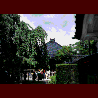

妙立寺/石川県金沢市 
観光客が多い割には観光スポットの少ない街金沢。そんな行き場のない観光客をひそかに集め続けているのが、市内は寺町の妙立寺、通称忍者寺である。
ここは加賀藩主前田家の祈願寺で、名前の通り忍者屋敷顔負けの複雑な内部構成とからくり仕掛けがウリの寺なのだ。比較的メジャーなスポットだが侮るなかれ江戸時代の奇想を今に伝える怪建築なのである。
創設は天正13年、現在の建物は寛永20年（1643）に移築された際建立されたものらしい。施主は三代藩主前田利常。
主な構成としては本堂とその左側の庫裏の二つの建物からなっており、外から見るとごく普通の二階建ての建物にも見えるのだが実際は四階建て、七層という恐ろしい建物で部屋数が23、階段数が29という、聞いただけでは一体どうなっているのか、想像がつかない空間構成となっているのだ。
これは当時、幕府の命令により三階建て以上の建築が御法度だったという側面もあるが、やっぱり建築の限界に挑戦したかったというのが本音だろう。
そういう意味でもこの寺が戦闘用の出城の用途を果たしていたという説よりは遊び心でつくられたという説のほうが説得力があるような気がする。もうひとつ男女の密会の場であったという説も捨てがたいが。
で、内部なのだが、落とし穴になっている床埋め込みの賽銭箱、本堂須弥壇裏の隠し階段、蹴込が障子張りになっている明かり取り階段（階段の裏に小部屋があり、そこから敵の侵入が分かる仕組み）、落とし穴階段等々のからくり仕掛けがあり、さらに無数の隠し部屋、隠し扉、隠し通路などがそれぞれの部屋を結んでいて、特に庫裏の方は複雑で一度や二度訪れただけでは全体像が把握出来ないほど複雑な立体迷路のような構成になっている。
基本的には中央に吹き抜けている井戸（この井戸も数降りたところに横穴があり、そこから金沢城まで続いているという噂、多分嘘）を中心に各部屋が螺旋状に配置されているものと思われるが、それも隠し部屋などが部屋と部屋の間に無理矢理挿入されていたりするので物凄くぐちゃぐちゃな構成になってしまっている。
最上階からは本堂の屋根の上にあるギヤマン張りの望楼に出られるらしい。
よくこれだけの部屋をこの規模の建物の中に詰め込んだなあ、というのが率直な感想。
これ以上私の稚拙な文章ではここの奇怪さ複雑さは表現出来ません。とにかく行ってくれ、見てくれ。
1998.5.
珍寺大道場 HOME